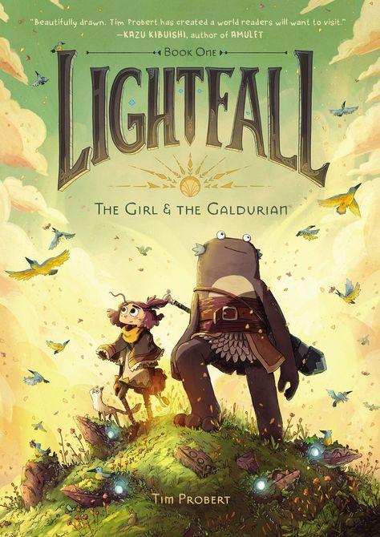

"Waves" is a graphic novel written by Ingrid Chabbert and illustrated by Carole Maurel. The story revolves around the real-life experiences of a couple grappling with loss and grief after a miscarriage. Ingrid Chabbert shares her personal journey of pregnancy loss, while Carole Maurel brings the narrative to life with poignant and emotive illustrations. "Waves" explores themes of loss, consolation, and the resilience found within human relationships. As a graphic novel, it uses a combination of visuals and words to convey an intimate and profound narrative, offering a touching and hopeful exploration of a challenging journey.

"Lightfall: The Girl & the Galduriant" is a visually enchanting graphic novel by Tim Probert. The story follows Bea, a determined girl, on a magical quest to uncover her past and confront mystical forces threatening her world. Accompanied by the peculiar creature Cad, Bea navigates a fantastical realm filled with danger and wonder. Tim Probert's intricate illustrations bring the characters and the magical world of Irpa to life, making "Lightfall" a captivating blend of adventure and whimsy, appealing to readers of all ages.
© 2022 BookPedia